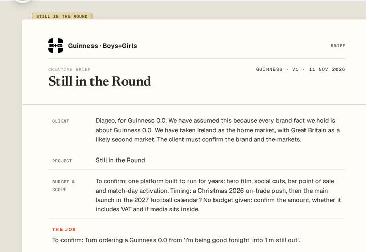
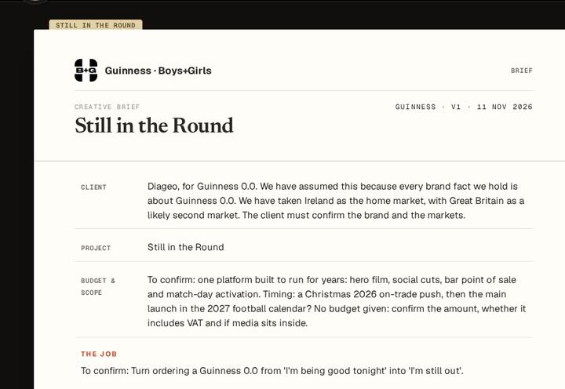

02 · Colour, type, spacing, radii, shadows, paper
Foundations
Every value on this page is copied from app/src/shell/nui/tokens.css, nui.css and shell.css. The approved mock (design/new-ui/napkin-app-v1.html) and its measurements in design/new-ui/parity/gaps.md §13 are where those files come from. The agency layer (palette.ts surfaceCss) tints --desk, --paper, --card and --line after this file loads, so these are the values before any agency tint.
Colour tokens
Each swatch shows light on the left and dark on the right. The tools also have identity colours of their own: Brief Maker's manila and terracotta, and Research's highlighter.
--desk#F6F1E7 · #121110page and frame behind everything
--paper#FFFDF8 · #1B1A18sheets, panels, menus
--paper-2#F3ECDC · #262320second paper (tool homes)
--card#FFFFFF · #201E1Bcards, inputs, the bar buttons
--ink#141413 · #EFE9DEtext, the dark band
--ink-soft#2A2620 · #D6CEC0body text on paper
--muted#6D655A · #A49B8Dsecondary text, labels
--faint#9A9082 · #7B7367dates, ages, hints
--line#E2D9C8 · #34302Ahairlines, borders
--line-strong#2A2620 · #CFC6B6dashed adders, strong rules
--warn#B45309 · #E09A4Bneeds-you amber: badge, count, state
--warn-soft#FEF3DC · #3A2A18call card ground
--ok#1D8A4E · #5DBB83checked / verified
--ok-soft#E6F6EC · #1C2E23verified badge ground
--alert#C9462Aerrors, Brief red mark
--alert-soft#FFF1EEerror ground
--accent-line#C8CBFFNapkin line colour (fixed)
Agency tokens (set by the agency layer)
--ag-base#515BFFthe agency's base (fallback Napkin)
--ag-acc#C8CBFFthe agency's accent
--ag-act#515BFF · #C8CBFFprimary fill: base in light, accent in dark
--ag-act-ink#FFFFFF · #141413ink on the primary
--ag-acc-ink#101114ink on the accent
The surfaces mix the base in, in sRGB: --desk = color-mix(base 6%, #F6F1E7), --paper 2.5% into #FFFDF8 and --line 10% into #E2D9C8. In dark it is 12%, 9%, 7% (--card) and 16%. An agency set to surface:'mono' uses neutral surfaces instead. See Agency looks.
Tool identities
--bm-manila#E7D5ACBrief tab, folder card
--bm-manila-2#F3E8CCBrief home card ground
--bm-manila-line#C4AA75manila edge
--bm-red#C9462ABrief period dot and eyebrow dash
--rs-hl#F6E36BResearch highlighter: selection, the band underline
Do
Use a token (var(--warn)). Amber is the only loud colour, and it always means "needs you".
Don't
Hard-code #B45309 in a template, or use amber for decoration, success or a brand.
Type
There are three faces: Geist (--font-ui) for the interface, Newsreader (--font-serif) for Brief Maker's voice and the brief's statements, and Geist Mono (--font-mono) for eyebrows, labels, counts, and as the Research Tool's display face. The body is Geist 15px on 1.55 (23.25px).
The Brief home title is set in Newsreader 600 (.nui[data-tool="brief"] .hero-title) and the Research home title in Geist Mono 700 at -0.05em. A document's name in the bar follows its tool: .tba-brief b is Newsreader 15px and .tba-research b is Geist Mono.
Spacing, radii, shadows
| Token | Value | Used on |
|---|---|---|
--shadow-card | 0 1px 2px rgba(20,20,19,.06), 0 4px 12px -4px rgba(20,20,19,.08) | cards on the desk |
--shadow-paper | 0 1px 0 rgba(255,255,255,.75) inset, 0 8px 24px -8px rgba(50,38,18,.10), 0 1px 3px rgba(50,38,18,.08) | sheets, the research report. In dark: 0 24px 60px -24px rgba(0,0,0,.7) and no border |
| medallion | 0 10px 22px -6px rgba(16,17,20,.20), 0 2px 6px rgba(16,17,20,.08) | the Deep O in the bar (64px) |
| menus | 0 18px 40px -14px rgba(20,20,19,.38) · radius 10px · padding 6px | .p33-pop, .tba-menu |
| dial | drop-shadow(0 18px 30px rgba(20,20,19,.12)) | .dial 360px |
| drawer | width min(540px, 94vw) · backdrop rgba(20,20,19,.28) | Decisions |
Paper surfaces
There are four layers, from the back. The desk (--desk) is the page. The bar is the desk at 94% (92% in dark) behind a 12px blur, with a line under it. The paper (--paper) holds sheets, panels and menus. The card (--card, pure white in light) holds inputs and buttons that sit on paper. The Brief sheet adds a faint grain and, in dark, a warm radial wash (.sheet in brief-maker/index.html:306–312).


Buttons and controls
| Class | Look | Rule |
|---|---|---|
.btn-rect | 38px · radius 4px · 1px --line · paper · 13.5px/600 | default button. .primary and [aria-pressed=true] fill with --ag-act |
.sp-btn | 28px · radius 6px · 12px/600 | every secondary button and toggle in a side panel |
.side-link | 13px/600 underlined, decoration in --ag-act at 55% | quiet actions |
.seg-row | 32px segmented control, selected = --ag-act | Open/Boxed, Report/Evidence map, Everyone/Me, drawer tabs |
.tba-btn | 30px · radius 8px · 12.5px/600 · hover 10% --ag-act | the document's bar actions (Continue in, Share) |
.badge-pill | mono 10.5px/700 uppercase · radius 999px | .verified ok, .proposed warn |
Focus is outline: 2px solid var(--accent); outline-offset: 2px everywhere in .nui. On a phone every target is at least 44px (shell.css @media (max-width:720px)).